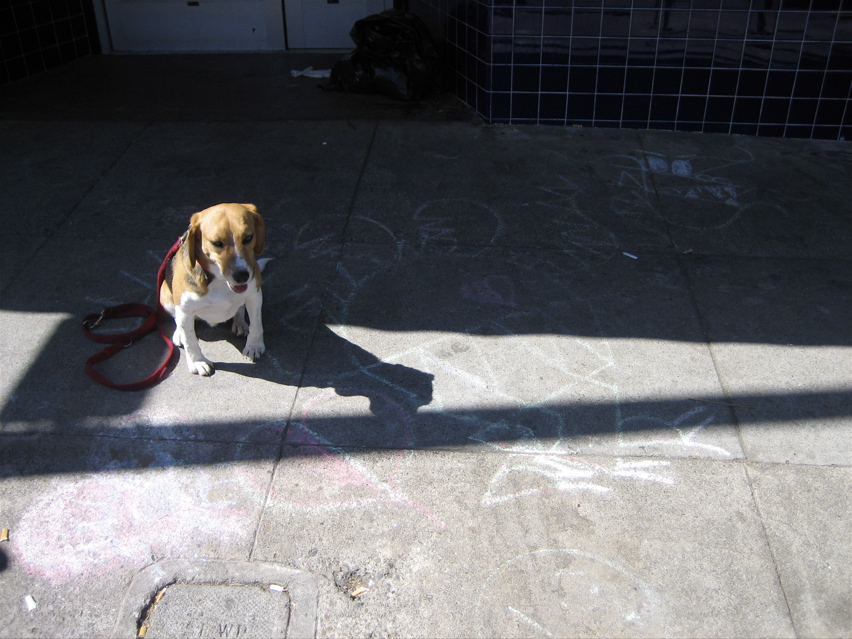

<--Previous Up Next-->

Ed Emberley dragon
This dragon, in front of Ritual Coffee Roasters on Valencia, is straight out of Ed Emberley's Drawing Book of Animals, which I had thirty years ago. The artist added a heart. We saw another dragon and a lion's head around the neighborhood as well.